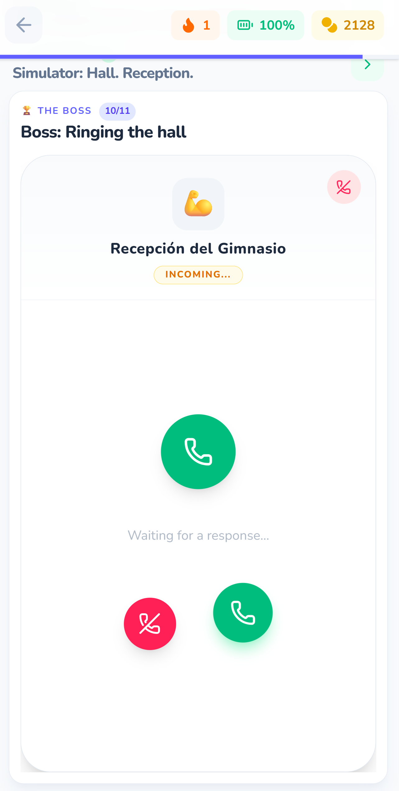
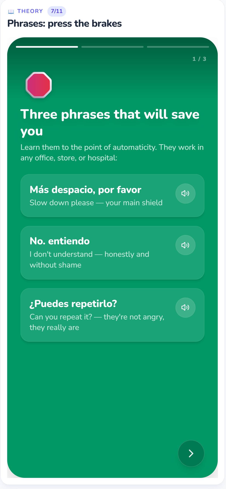
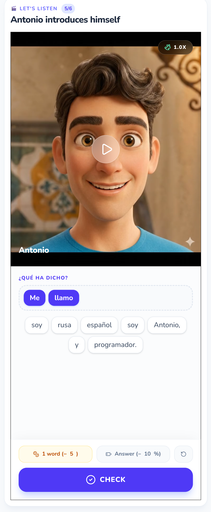
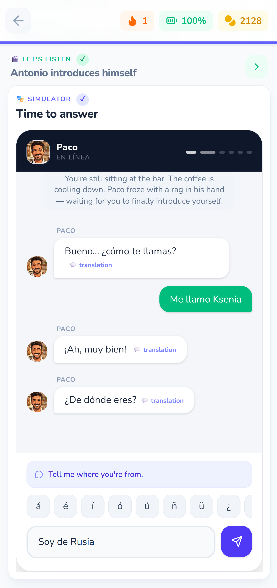
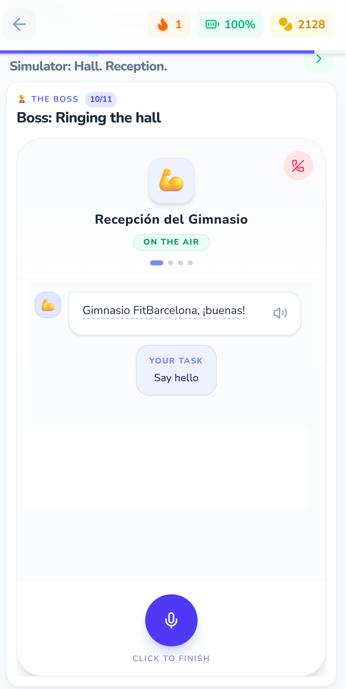
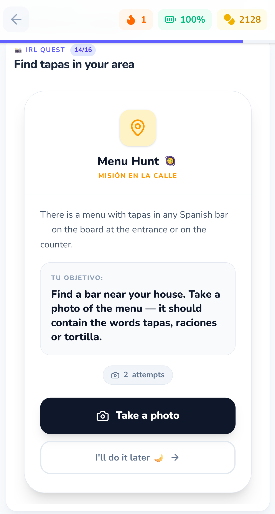

Scenario-based learning · Interactive storytelling · Conversational AI
Tranquilo.Quest
From recognizing Spanish to making the next move.
An experimental learning prototype using everyday stories, supported practice, and conversational AI to give adults a reason to respond in Spanish.
A learner may recognize a phrase but hesitate when someone asks a question. I explored how a familiar setting, useful language cues, and gradual movement into conversation could bridge that gap.

Core design decision: rehearse language with support, then ask the learner to make a personal response in a conversation.
Make an everyday exchange achievable.
I designed for adult beginners, initially Russian-speaking people adapting to life in Spain. My teaching experience and this relocation context informed the choice of introductions, bar conversations, and reception scenarios.
- Understand a short introduction: identify key language in speech and reconstruct it with support.
- Introduce oneself: respond to a name or origin question with relevant personal information.
- Keep an exchange going: use clarification phrases such as “Más despacio, por favor” and “¿Puedes repetirlo?”, then attempt another turn.
Keep the context familiar as the response opens up.
Recurring characters, including Paco and Antonio, connect language practice to a continuing story. A bar or reception desk gives the learner a communicative goal: introduce yourself, understand a greeting, or ask for clarification.


Hear an introduction. Then introduce yourself.
Communicative goal: respond when Paco asks your name and where you are from. The demonstrated introduction activities move from a spoken model to a personal reply.




Objective → activity → response: introducing oneself becomes a personal reply to Paco, rather than another recognition question. In the shown exchange, supplying a name addresses his first question; answering the origin question is the next communicative move. His acknowledgement keeps the dialogue moving.
Respond to meaning within a conversation.
The learner types Spanish to a character. Conversational AI is intended to accommodate varied wording and provide a relevant next turn. I chose a chat interface to make the interaction resemble an exchange with another person, with visible context and translation support.
The feedback design aims to keep conversation moving while helping the learner notice language to improve. The introduction shows acknowledgement and continuation; correction quality needs testing across valid alternatives, errors, and misunderstandings.




AI can misread intent, correct acceptable Spanish, or drift beyond the intended language level. Text and voice interactions remain experimental; reviewing feedback and recovery when an interaction fails is a priority.
Test the transition into open practice.
The prototype demonstrates contextual content, supported listening, text role-play, and experiments with simulated calls and everyday missions. It has not been part of my regular teaching. The next step is a small learner pilot focused on one complete scenario.
What I’d measure
Planned evaluation
- Completion depthWhere do learners stop or skip, and do they reach the open response?
- Role-play participationDo learners attempt a reply and continue another turn? What support do they use?
- Return rateDo learners return after one and seven days, and what brings them back?
- Learning transferCan learners respond in a new communicative situation, immediately and later? Record teacher-rated performance and support needed.
- AI feedback appropriatenessDoes teacher review find relevant responses, justified corrections, and manageable failures?
These are future measures. I would combine activity data with observation and brief interviews; participation and mission completion alone do not establish language transfer.
Validate the sequence before expanding the story.
Start smaller. Test one short scenario from input to open response before producing more episodes. Use observed support needs to refine the progression.
Define measurement earlier. Specify starts, attempts, skips, support use, and returns before adding mechanics, so each event informs a design decision.
Test transfer separately. Add an unfamiliar communicative task and delayed follow-up, rather than infer learning from completion.
Review feedback and failure scenarios. Test misunderstood answers, unsuitable language, and unavailable responses; build clear ways to recover.
Narrative requires production time and can make direct skill access harder. Hints can become answer copying, and rewards can distract from language use. A smaller pilot would help decide what to retain, simplify, or remove.